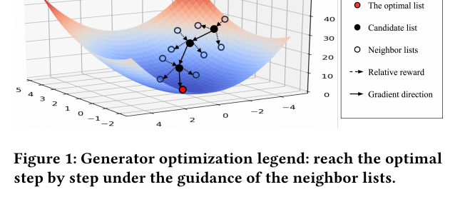
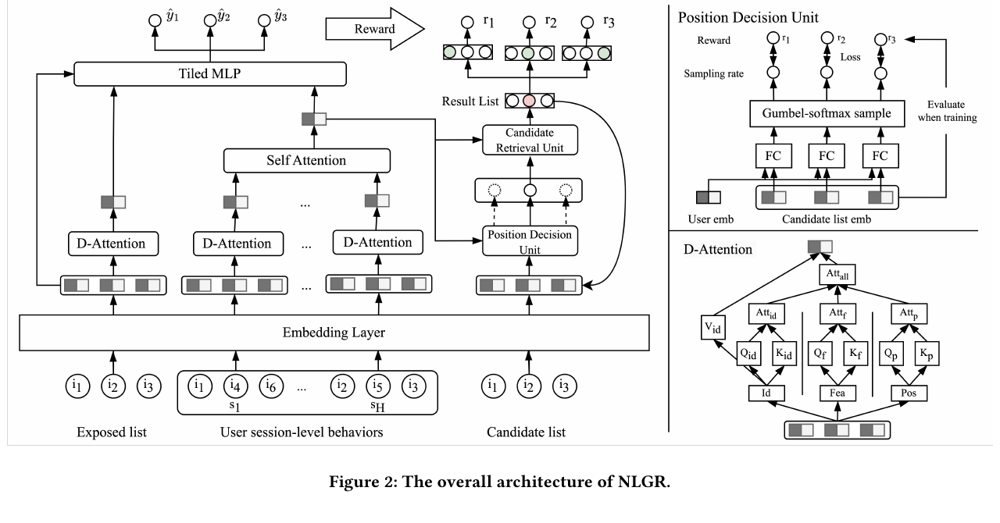
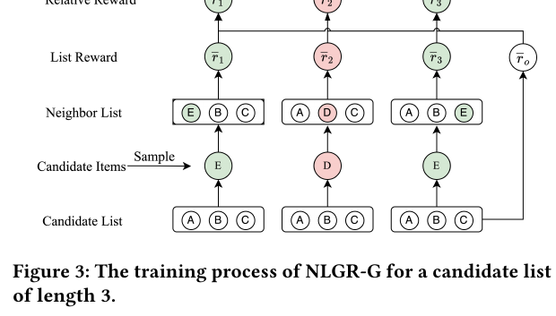
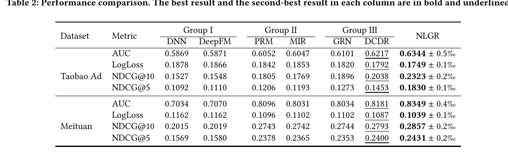
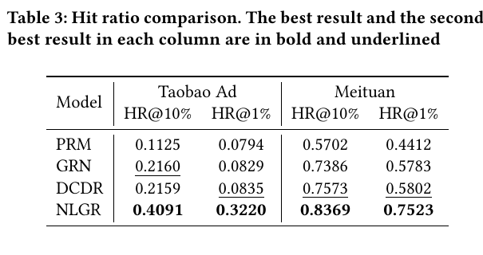
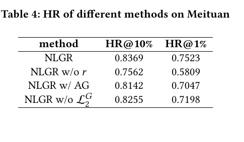
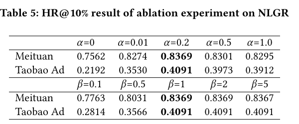
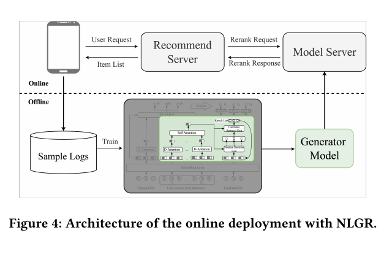
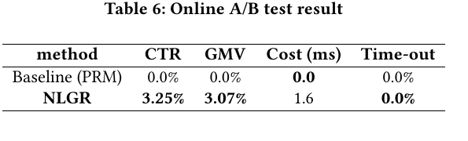

NLGR
1. 基本信息
- 标题：NLGR: Utilizing Neighbor Lists for Generative Rerank in Personalized Recommendation Systems
- 作者：Shuli Wang, Xue Wei, Senjie Kou, Chi Wang, Wenshuai Chen, Qi Tang, Yinhua Zhu, Xiong Xiao, Xingxing Wang
- 机构：Meituan
- 时间：2025
- 会议：WWW Companion 2025
- arXiv：https://arxiv.org/abs/2502.06097
- DOI：https://doi.org/10.1145/3701716.3715251
- 本地 PDF：
C:\Users\chaol\Desktop\推荐论文阅读\re-ranking\NLGR-Neighbor-Lists-for-Generative-Rerank.pdf - 笔记位置：
论文笔记/重排/生成式重排/NLGR.md - 分类：重排 / 生成式重排 / 邻居列表训练
2. Vault 内相关论文 / 笔记关系检查
- 推荐系统重排最新进展：参考综述已把 NLGR 放在 2025 生成式重排路线中，定位为“用邻居列表增强 generator 在组合空间里的个性化能力”。
- YOLOR：YOLOR 引用 NLGR，并把这类 generator-evaluator 方法作为仍受 GSU/ESU 不一致影响的路线；两者同属美团工业重排，YOLOR 进一步转向只保留高效 ESU 的树状缓存评估。
- 未给 CMR 或 AgenticRecTune 添加双向相关论文链接：NLGR 正文没有引用、实验对比或继承这两篇已有单篇笔记；它们和 NLGR 只是同属重排大类，关系不够强。
- NLGR 明确对比了 PRM、GRN、DCDR、NAR4Rec 等生成式或列表级重排方法，但当前 vault 里没有对应单篇笔记文件，因此这里不创建虚假的 wikilink。
3. 一句话总结
NLGR 仍采用 evaluator-generator 生成式重排范式，但把 evaluator 的离线反馈改成“原列表与邻居列表的相对收益”，让 generator 学会朝组合空间中的更优邻域移动；同时用采样式非自回归替换候选，不按从左到右逐项生成，从而在美团外卖线上以约 1.6 ms 额外成本带来 CTR +3.25%、GMV +3.07%。
4. 问题背景
工业推荐通常是 matching、ranking、reranking 三阶段。ranking 侧的 Wide&Deep、DeepFM、DIN 等模型多是 point-wise 估计 CTR，它们逐个 item 打分，难以处理列表里 item 之间的相互影响。reranking 的目标更接近列表级最优化：给定候选集 ，输出最终曝光列表 ，不仅要看单个 item 好不好，也要看它放在当前列表和当前位置是否合适。
论文把 reranking 的难点明确为组合空间搜索。若候选集大小为 ，输出列表长度为 ，可能排列数量是 。直接枚举所有排列再由 evaluator 评分可以接近全局最优，但工业系统无法承受这种推理成本。
已有 evaluator-generator 范式用 generator 先生成少量候选列表，再由 evaluator 评估列表效用。NLGR 指出这里有两个关键问题：
- 目标不一致：evaluator 学的是“给一个列表估计 list-wise score”，generator 学的是“把任意候选列表变成最优列表”。如果 evaluator 的分数不能稳定转成 generator 的优化方向，generator 可能只拟合历史曝光分布，而不是在组合空间里找更优解。
- 自回归生成视野受限：逐项生成时，第 位只显式依赖前面已生成的 item，容易忽略后续 item 信息。对于 reranking 来说，某个位置是否该替换，往往取决于整个列表上下文，而不是只取决于前缀。
因此 NLGR 的问题不是“再训练一个更强 evaluator”，而是让 generator 在离线训练时看见邻域内的相对收益，并在线上只部署轻量 generator。
5. 方法总览
5.1 Figure 1：邻居列表给 generator 提供搜索方向

Figure 1 是本文的直觉图。黑点表示当前 candidate list，空心点表示只替换 1 个 item 后得到的 neighbor lists，红点表示更优列表。generator 不再只学习“历史曝光长什么样”，而是利用 evaluator 对多个邻居列表的打分，判断从当前列表往哪个邻居方向走收益更高。
这里的“邻居”定义很严格：两个列表距离为 1，表示它们只差 1 个 item；如果只是交换列表内两个 item，新列表与原列表的距离是 2。这个定义决定了 NLGR 的训练信号是“单位置替换是否带来更高列表收益”，也解释了后面 PDU 和 CRU 为什么分别负责“替换哪个位置”和“换成哪个候选 item”。
5.2 整体框架
NLGR 包含两个模块：
- NLGR-E：evaluator，输入待评估曝光列表和用户 session-level 历史行为序列，输出每个位置 item 的 pCTR、pCVR 等预测。它只参与离线训练。
- NLGR-G：generator，输入待重排 candidate list 和用户历史行为，反复决定一个待替换位置，再从候选集中取一个 item 放入该位置。线上 serving 只部署 NLGR-G。
这和许多两阶段生成式重排的区别在于：NLGR-E 离线指导 NLGR-G 时不直接把绝对分数当监督，而是评估原列表和邻居列表的差值。作者希望 generator 学到的是“当前列表附近哪个局部动作能提升列表效用”。
6. 问题定义
在美团外卖场景中，用户集合为 ，item 集合为 。用户特征 由 session-level 历史交互列表 和候选集 表示，最终要从候选集中选择列表 展示给用户。
优化目标是学习一个策略 ，最大化列表级 reward 。这个 reward 会综合 CTR、CVR 等业务指标。这里的 是候选集大小， 是输出列表长度，二者不能混淆：NLGR-G 的 PDU 在 个输出位置中选一个位置，CRU 在 个候选 item 中选替换 item。
邻居列表定义为：
- 若两个列表只差 1 个 item，则距离为 1，它们是 neighbor lists。
- 若交换同一列表内两个 item，则距离为 2，不属于本文的 1-hop neighbor。
这个定义使 NLGR 的一次生成动作可以看成“从当前列表跳到一个一跳邻居列表”。
7. NLGR-E：Evaluator
7.1 Figure 2 左侧：用 D-Attention 评估列表

Figure 2 是全文最重要的结构图。左侧是 NLGR-E，中间是 NLGR-G，右上角放大了 PDU，右下角放大了 D-Attention。整张图的关键是：evaluator 负责离线给原列表和邻居列表估值，generator 在线只保留中间的替换式生成流程。
NLGR-E 有两个输入：
- 待评估的 exposed list，embedding 记为 。
- 用户 session-level 历史行为序列，embedding 记为 。
其中 是历史 session 数， 是每个列表 item 数， 是每个 item 的特征字段数，例如 ID、category、position index， 是 embedding 维度。
论文借鉴 DIF，提出 D-Attention 来避免不同特征字段相互干扰。对第 个字段 ，先计算该字段内部的 item-item attention：
每个 都是 ，描述同一字段下列表内 item 之间的关系。然后把所有字段的 attention 平均：
最后只聚合 ID embedding：
这个设计的含义是：==各特征字段先分别决定“item 间应该如何互相看”，再把这些字段级上下文融合成一个统一 attention；真正被加权聚合的是 ID 表征。这样做的前提是每个列表都有对齐的 个位置和可用的字段 embedding；如果实际线上有 padding 或缺失字段，必须额外 mask，否则 attention 会把无效位置也纳入列表表征==。
对用户历史 session，NLGR-E 对每个 session 也执行同样的 D-Attention，得到 session 表征 。再用 Self-Attention 汇总多个 session：
最终第 个 item 的 pCTR 为：
这里输出是列表中每个位置一个预测值，不是整个 request 一个标量。pCVR 和其它评估目标也走同样流程。后续列表 reward 会把这些逐位置预测汇总成列表级收益。
8. NLGR-G：Generator
NLGR-G 的输入也是 candidate list 和用户 session-level 行为序列。理论上 candidate list 可以是组合空间中的任意列表，实际通常用 ranking list 作为初始列表。
NLGR-G 首先复用 Eq. 4 得到用户表示 。论文说这部分参数从 NLGR-E 共享，目的是让 generator 的剩余参数更集中地学习替换策略，而不是重复学习用户历史建模。
8.1 PDU：决定替换哪个位置
PDU 的输入是 candidate list embedding 。对第 个位置，先把该 item 的多字段 embedding 展平或拼接，再结合列表表征、用户表征和位置 embedding 计算位置 logit：
PDU 要从 个位置中采样一个待替换位置，但采样和 argmax 不可微。论文使用 Gumbel-softmax：
其中 是温度， 是从 Gumbel 分布得到的噪声， 来自 上的均匀分布。反向传播时用 softmax 概率 传梯度，前向时用 取具体替换位置。
这个 straight-through 风格的处理很关键：训练时模型能接收“位置选择分布”的梯度，生成时仍能做离散替换动作。如果只用硬 argmax，PDU 无法端到端训练；如果线上只用软分布，又不能得到确定的替换位置。
8.2 CRU：从候选集中检索替换 item
CRU 在 PDU 选出位置 后，要从 个候选 item 中选一个放到位置 。论文强调这个动作会在生成过程中重复多次，所以用 retrieval-style 技术提高效率。
流程是：
- 把 candidate list 的第 个位置 mask 掉，得到 。
- 用 Self-Attention 得到被 mask 后的列表表示：
- 对候选集 中每个 item，结合目标位置 得到候选 item 表示：
- 计算第 个候选 item 放入位置 的 logit：
- 再用 Gumbel-softmax 采样：
前向时新 item 是 。停止条件有两类：新插入 item 等于被替换 item，或者 、 的值太低。
这里“非自回归”的含义不是一次并行生成完整列表，而是每次从全列表角度选择一个位置并替换一个 item。它不固定从左到右，也不只依赖已生成前缀；CRU 的 看的是去掉目标位置后的整条列表，因此可以利用前后文，也就是论文说的 full sight。
9. 邻居列表训练
9.1 Figure 3：按位置构造邻居列表

Figure 3 用长度为 3 的候选列表举例。原始候选列表是 ，从候选集中采样替换 item，例如 或 ，分别替换第 1、2、3 个位置，得到一组 neighbor lists。每个 neighbor list 和原列表只差一个位置，因此 distance 为 1。
这张图说明 NLGR-G 的训练目标不是“生成历史曝光列表”，而是学习：如果我在当前位置替换成某个候选 item，列表 reward 相对原列表会不会变好。绿色位置表示带来正向相对收益，红色位置表示负向收益。PDU 后续会用这些 position reward 学会优先替换更可能提升列表收益的位置。
9.2 NLGR-E 的监督训练
NLGR-E 用线上日志中的真实曝光序列训练。输入是真实推荐广告序列的特征，label 是曝光、点击、转化等反馈。论文当前给出的损失是逐位置二分类交叉熵：
这里 遍历曝光列表中的 个 item。这个 evaluator 的作用是离线模拟用户反馈，为原列表和邻居列表提供 pCTR、pCVR 等估计。
9.3 NLGR-G 的相对 reward
对每个候选列表 ，先从候选集 采样替换 item ，替换每个位置 ，构造邻居列表：
对所有位置重复后得到 。然后用训练好的 NLGR-E 分别评估原列表 和邻居列表 ，得到列表 pCTR、pCVR，再转为业务 reward：
和 是 evaluator 估计出的列表总 pCTR 和总 pCVR，、 是依赖点击出价和转化价格的业务参数。这个 reward 不是纯学术排序指标，而是直接把业务价值映射进列表收益。
关键一步是相对 reward。原列表 reward 记为 ，第 个 neighbor list 的 reward 记为 ，则：
论文符号里左边和右边都写 ，容易混淆；更清楚的理解是：先有邻居列表的绝对 reward，再减去原列表 reward，得到“替换位置 是否值得”的相对收益。这个差值才是解决 evaluator-generator 目标不一致的核心，因为它把 evaluator 的绝对估值变成 generator 可执行的局部搜索方向。
把所有位置的相对 reward 聚合成 ，定义 generator 的 counterfactual loss：
负号表示：如果邻居替换让列表收益更高，就应该降低 loss，鼓励 generator 向这些邻居移动。
9.4 PDU 的辅助监督
为了稳定 PDU，论文用 position reward 直接监督位置采样分布：
这里有一个实现上容易被忽略的条件：交叉熵目标需要 是合法分布，至少要求参与归一化的 reward 非负且和不为 0。论文没有展开负相对 reward 如何处理；实际实现中很可能需要截断、平移或只保留可用正向信号，否则这个公式在数学上会失效。
最终 batch 内 generator loss 是：
控制 counterfactual reward 和 PDU 辅助监督之间的权重。后续超参实验显示 时 HR 明显下降，说明只靠没有 full sight 的生成式方法不够。
10. 实验设置
论文在公开 Taobao Ad 和美团工业数据集上做离线实验。
- Taobao Ad：8 天展示广告日志，约 114 万用户、99815 个 item、2656 万条交互记录。
- Meituan：2023 年 10 月美团外卖真实数据，约 1.306 亿用户、1405 万 item、13.31 亿条交互记录，包含 239 个特征、点击和转化两个 label，按 9:1 划分训练/测试。
baseline 分三组：
- Group I point-wise：DNN、DeepFM。
- Group II list-wise：PRM、MIR。
- Group III generative：GRN、DCDR。
离线评估里，AUC、LogLoss、NDCG 用来评估 NLGR-E 的列表评估能力；HR 用来评估 NLGR-G 和 evaluator 的一致性。HR@10% 的定义是：NLGR-G 生成的列表，在 NLGR-E 对所有候选列表排序后，是否进入 top 10%。作者特别提醒，HR 只对 evaluator-based reranking 有意义，因为真实线上每次只能展示一个列表，无法直接观察所有候选列表的真实反馈。
实现细节中几个数值值得记：
- TensorFlow 1.15.0，A100-SXM4-80GB。
- Adam，学习率 0.001。
- batch size 1024，embedding size 8。
- 默认 。
- Taobao Ad 中 ranking list 和 reranking list 长度都是 5，完整排列数 120。
- Meituan 中从 12 个初始 ranking item 选 4 个，完整排列数 。
11. 离线结果
11.1 Table 2：NLGR 在 evaluator 指标上全面领先

Table 2 说明 NLGR 在两个数据集上都优于 point-wise、list-wise 和 generative baseline。关键数值：
- Taobao Ad：AUC 0.6344、LogLoss 0.1749、NDCG@10 0.2323、NDCG@5 0.1830，均优于 DCDR。
- Meituan：AUC 0.8349、LogLoss 0.1039、NDCG@10 0.2857、NDCG@5 0.2431，也都排第一。
实验解读要分两层。PRM/MIR 相比 DNN/DeepFM 更好，说明列表上下文确实有用；DCDR 相比 PRM/MIR 更强，说明生成式重排比单纯 context-wise 重新打分更有潜力；NLGR 再进一步超过 DCDR，作者认为原因是 DCDR 缺少 full sight，也没有充分利用 evaluator 的邻域指导。
11.2 Table 3：generator 和 evaluator 的一致性

Table 3 直接评估 generator 生成的列表能否被 evaluator 排到高分区域。NLGR 的 HR@10% 在 Taobao Ad 上是 0.4091，在 Meituan 上是 0.8369；HR@1% 分别是 0.3220 和 0.7523。
这个表比 AUC/NDCG 更贴近本文关于 generator 的主张。PRM 在 Meituan HR@10% 只有 0.5702，说明贪心或重新打分不一定能找到 evaluator 认为好的组合；DCDR 的 Meituan HR@10% 是 0.7573，强于 GRN/PRM，但仍低于 NLGR。作者据此强调：有效重排不能只靠 greedy strategy，也不能只生成一个缺少全局邻域视角的序列。
12. 消融与超参
12.1 Table 4：邻居相对 reward 是最大贡献

Table 4 在 Meituan 数据集上做三组消融：
- 去掉相对 reward ，改用 evaluator 直接返回的预测值：HR@10% 从 0.8369 降到 0.7562，HR@1% 从 0.7523 降到 0.5809，是最大下降。
- 用 autoregressive generation 替换采样式非自回归：HR@10% 降到 0.8142，HR@1% 降到 0.7047。
- 去掉 ，即 PDU 缺少来自 NLGR-E 的直接位置指导：HR@10% 降到 0.8255，HR@1% 降到 0.7198。
这组结果支撑的核心结论是：NLGR 的主要增益不是来自“多一个 evaluator”，而是来自把 evaluator 的绝对估值转成 neighbor list 的相对训练信号。非自回归生成和 PDU 辅助 loss 也有贡献，但影响小于相对 reward。
12.2 Table 5： 和 的敏感性

Table 5 分析两个超参：
- 是 Eq. 18 中 的权重。
- 是构造 neighbor list 时每个位置的采样比例。默认 表示每个位置采样 1 次。
时，Meituan HR@10% 只有 0.7562，Taobao Ad 只有 0.2192；升到 后分别达到 0.8369 和 0.4091。继续增大到 0.5 或 1.0 后略降，说明 PDU 辅助监督有效，但过强会让模型过度贴合位置 reward 分布。
的结果说明“覆盖所有位置”的 counterfactual reward 很重要。当 时 Meituan HR@10% 为 0.7763， 达到 0.8369；继续到 2 或 5 基本不再提升，但会增加离线训练时间。换句话说，邻居列表训练至少需要让每个位置都有被评估的机会，超过这个程度收益变小。
13. 线上部署
13.1 Figure 4：线上只部署 generator

Figure 4 把在线和离线分开。离线部分从 sample logs 训练 NLGR-E 和 NLGR-G，evaluator 在训练时指导 generator；在线部分的 recommend server 发出 rerank request，model server 只调用 generator model 返回 rerank response。
这张图对工程意义很重要：NLGR 训练时虽然多次调用 evaluator 评估邻居列表，但线上不部署 evaluator，因此不会把“枚举邻居再评估”的成本带到服务链路里。论文声称这样可使模型复杂度与线上模型相当。
13.2 Table 6：美团线上 A/B

线上 A/B 在 2023 年 12 月到 2024 年 1 月做了 5 周，baseline 是 PRM 的一个变体。NLGR 的结果：
- CTR：+3.25%
- GMV：+3.07%
- 额外 Cost：1.6 ms
- Time-out：0.0%，没有增加
这组结果是本文工业价值的关键证据。它说明 NLGR 不只是离线 HR 更高，而且在不增加超时率的情况下提升了真实业务指标。注意这里的线上指标是 CTR 和 GMV，不是离线 NDCG 或 HR；作者用这个结果支撑“离线邻居列表训练能转化为线上推荐收益”的主张。
14. 结论、限制和记忆点
NLGR 的贡献可以拆成三点：
- 提出 evaluator-generator 之间的 goal inconsistency 问题：evaluator 会估列表分数，generator 却需要知道怎么从当前列表走向更优列表。
- 用 neighbor lists 把 evaluator 的绝对分数转成相对 reward，让 generator 学到组合空间里的局部优化方向。
- 用采样式非自回归生成，让 generator 可以从当前列表跳到任意一跳邻居，而不是按前缀逐项生成。
需要保留的限制：
- NLGR 仍依赖 evaluator 的估计质量；如果 NLGR-E 对 counterfactual neighbor list 的评分不可靠，relative reward 也会误导 generator。
- 论文没有详细解释负相对 reward 在 中如何处理，这是复现 Eq. 17 时必须补齐的实现细节。
- HR 指标依赖 NLGR-E 对候选列表排序，本质上是 evaluator-consistency 指标，不等价于真实用户对所有列表的反事实反馈。
- 邻居列表训练的额外成本放在离线阶段；线上成本低，但训练阶段需要多次构造和评估邻居列表。
- 方法关注的是单位置替换的一跳邻域，若最优路径需要多位置协同变化，仍依赖多轮迭代逐步接近。
记忆锚点：
- 问题：生成式重排的 generator 不一定知道 evaluator 的优化方向，且自回归逐项生成缺少后续视野。
- 邻居定义：只差 1 个 item 的列表是 neighbor list；交换两个 item 距离为 2。
- 核心训练信号：邻居列表 reward 减去原列表 reward，得到每个位置的相对收益。
- 核心结构：PDU 选替换位置，CRU 从候选集中检索替换 item，Gumbel-softmax 解决离散采样可训练问题。
- 工程点：evaluator 只离线使用，线上只部署 generator。
- 结果：Meituan 线上 CTR +3.25%、GMV +3.07%，额外 1.6 ms 且无超时增加。
15. 图表覆盖检查
- 设计图：Figure 1 已覆盖邻居列表搜索直觉；Figure 2 已覆盖 NLGR-E、NLGR-G、PDU 和 D-Attention；Figure 3 已覆盖邻居列表训练；Figure 4 已覆盖线上只部署 generator。
- 主结果表：Table 2 已覆盖 evaluator 离线指标；Table 3 已覆盖 generator-evaluator 一致性 HR。
- 消融 / 线上图表：Table 4 已覆盖相对 reward、非自回归生成和 PDU loss 消融；Table 5 已覆盖 、 超参；Table 6 已覆盖美团线上 A/B。